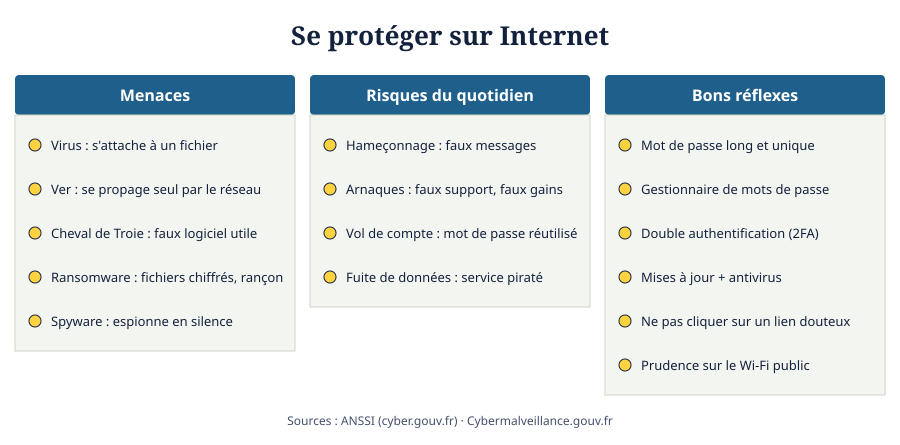

Se protéger sur Internet
Logiciels malveillants
- Virus
- Programme qui s'attache à un fichier et se propage quand on l'exécute.
- Ver
- Se copie seul d'un ordinateur à l'autre via le réseau, sans action de l'utilisateur.
- Cheval de Troie
- Semble utile mais ouvre une porte à l'attaquant.
- Ransomware
- Chiffre vos fichiers et exige une rançon pour les rendre.
- Spyware
- Espionne vos activités et vole des informations en silence.
Risques du quotidien
- Hameçonnage (phishing) : faux message qui vous pousse à donner identifiants ou paiement.
- Arnaques : faux supports techniques, fausses offres, faux gains.
- Vol de comptes : mot de passe réutilisé ou deviné.
- Fuite de données : un service que vous utilisez est piraté.
Bonnes pratiques
- Mots de passe longs et uniques, rangés dans un gestionnaire.
- Double authentification partout où c'est possible.
- Mises à jour du système et des applications.
- Antivirus à jour.
- Ne pas cliquer sur un lien ou une pièce jointe suspect.
- Éviter les comptes sensibles sur le Wi-Fi public (ou utiliser un VPN).
Infographie
